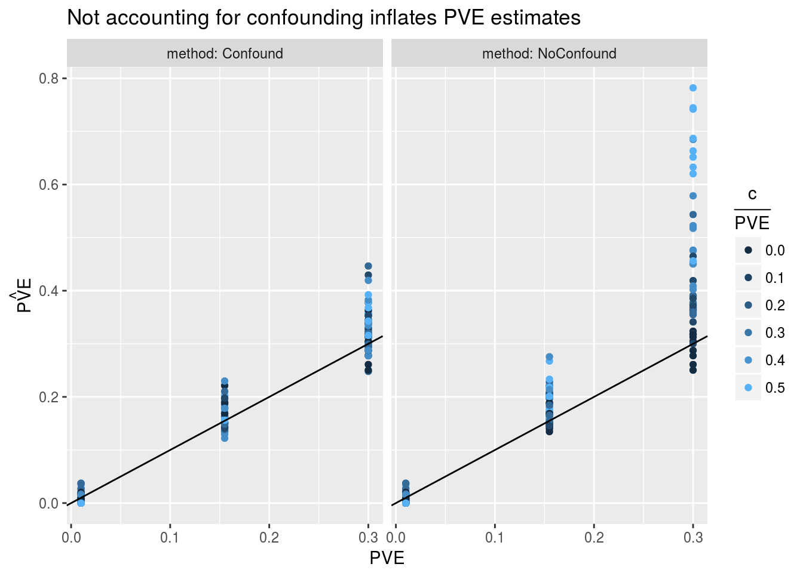
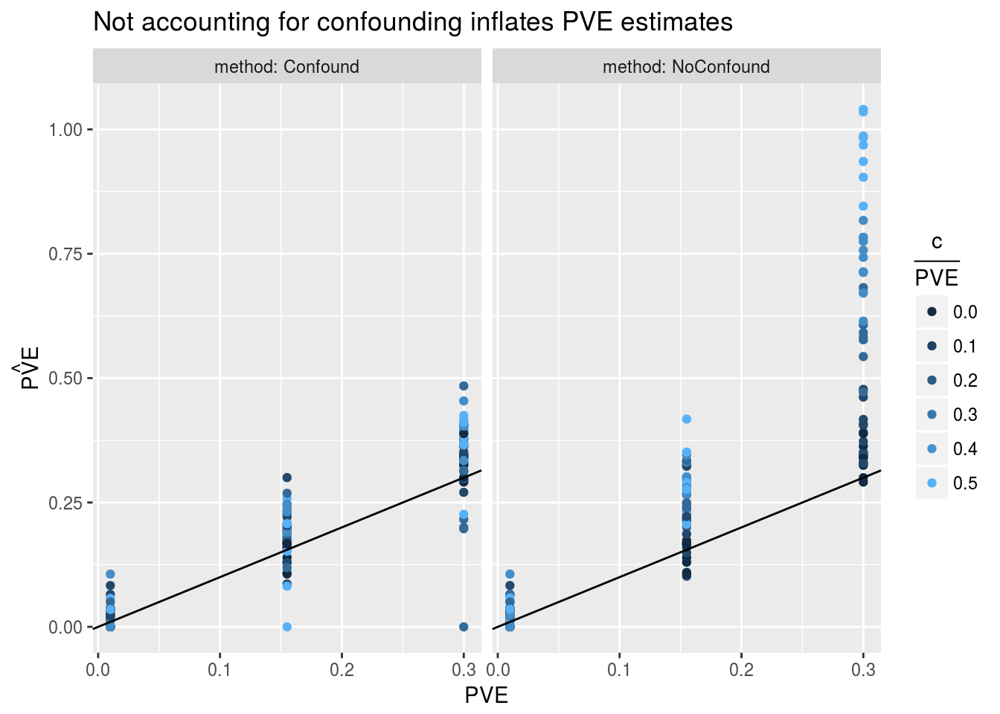
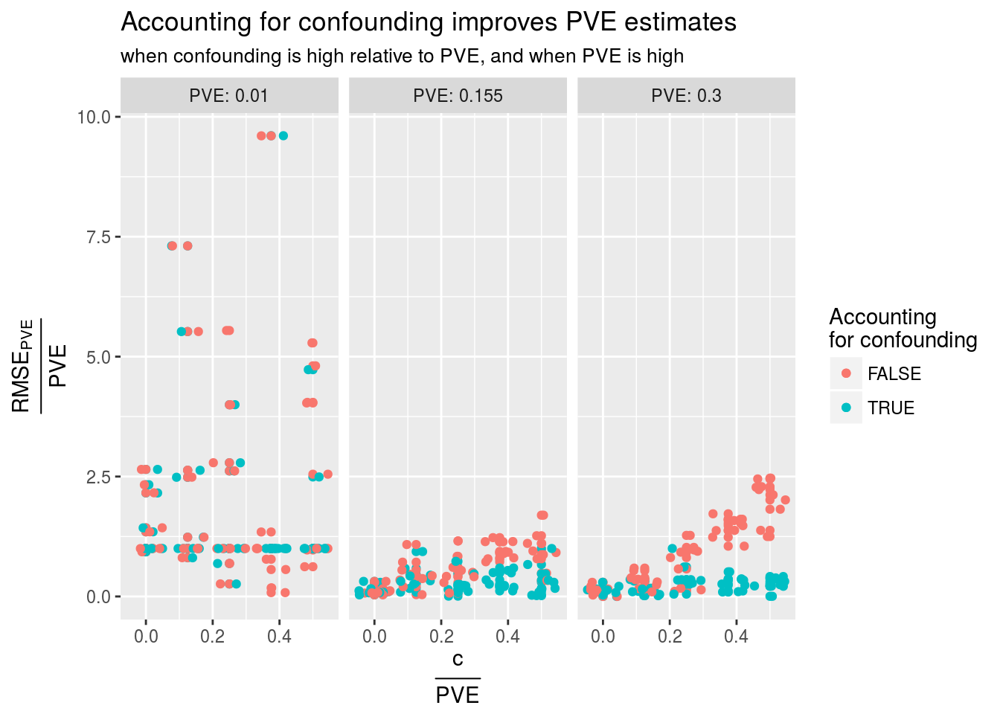
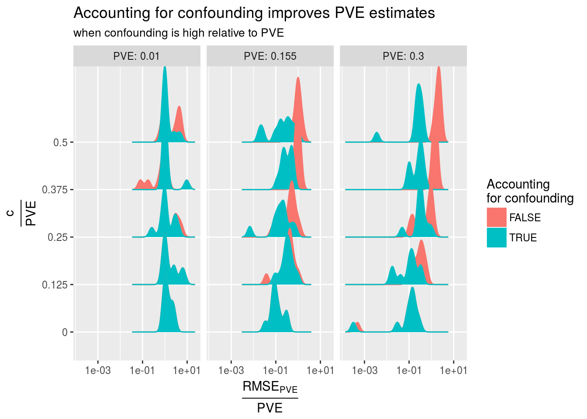
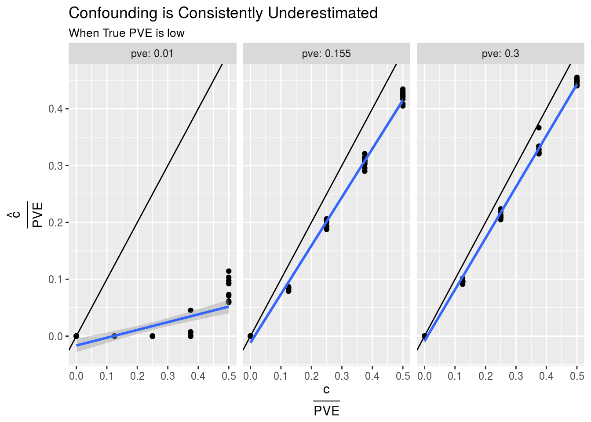
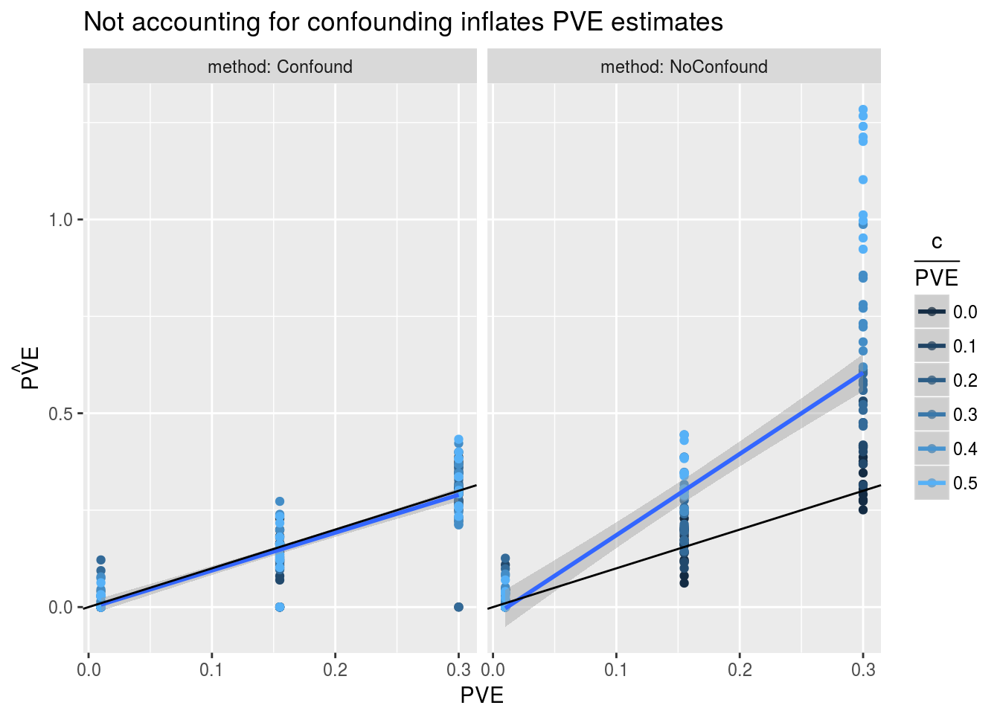
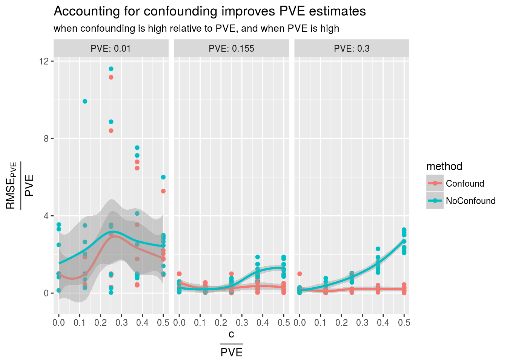
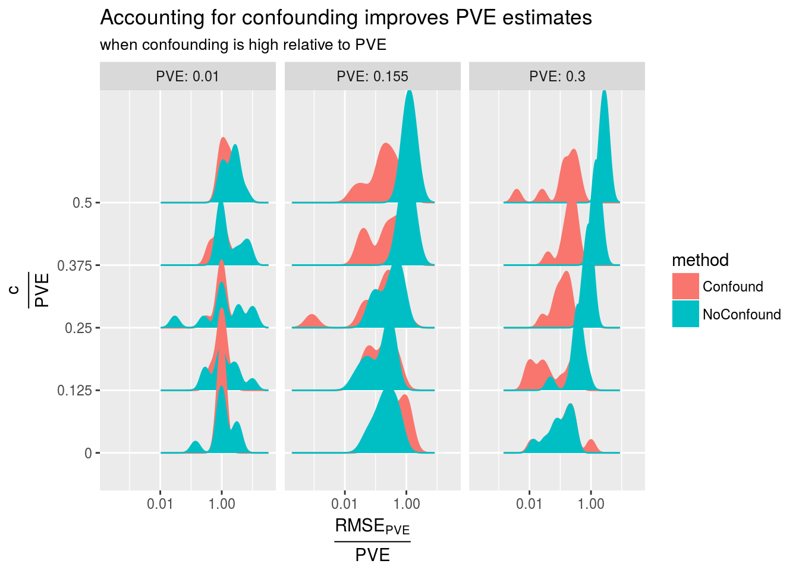

Polygenic Estimation With and Without Confounding
Nicholas Knoblauch
2017-07-28
Last updated: 2017-08-23
Code version: d2d915b
RSS with standardized effect size and polygenic prior
If we define \(\hat{u_i}=\hat{\beta_i}/s_i\) ,the likelihood becomes
\[\hat{u}|u \sim N(Ru,R)\]
The marginalized form is
\[\hat{u} \sim N(0,\sigma^2_uR^2+R)\] Let \(V(\sigma_u) = \sigma_u^2R^2+R=\sigma^2_u(R+\frac{1}{\sigma^2_u}I)R\)
Using an eigen decomposition of \(R\) (\(R=QDQ^T\)), we arrive at the log-likelihood function:
\[l(\sigma_u)=-\frac{1}{2}\left[\sum_i \log(d_i\sigma_u^2+1) + \hat{u}^TQ\text{diag}(\frac{1}{d_i^2\sigma_u^2+d_i})Q^T\hat{u}\right]\]
With confounding term
Adding a term for confounding is straightforward to implement
\[\hat{u} \sim N(0,R S^{-1} \Sigma_u S^{-1} R+ cI)\] Special case: \[ \Sigma_u= S(\sigma^2_uI)S\]
\[\hat{u} \sim N(0,\sigma^2u R^2+R+cI) \] MAF case: \[\Sigma_u = S \sigma^2_u \text{diag}([2f_i(1-f_i)]^\alpha)S\]
Likelihood
\[L(\hat{u})=\frac{-1}{2} |R S^{-1} \Sigma_u S^{-1} R + R + cI | -\frac{1}{2} \hat{u}^T(R S^{-1} \Sigma_u S^{-1} R + R + cI)^{-1}\hat{u}\]
Results
Read more about the large and small simulations
In the first plot, I show the estimate of PVE (\(\hat{PVE}\)) vs the true PVE. Remember that \(\hat{PVE}=\frac{p}{n}\hat{\sigma^2_u}\). This is without confounding. In the second plot, I show the \(\text{RMSE}(PVE)\) of the model that takes confounding into account (Confound) vs the model that doesn’t take confounding into account (No_Confound), with increasing levels of counfounding c = 0,0.1,0.2
Smaller Dataset


Here we see that when estimating parameters in log-space,the confounding estimate is actually more likely to get “stuck” near zero. This might be due to the unconstrained optimizer choosing very large negative values for the log of the confounding.
Larger Dataset



For the larger dataset, the two-parameter model doesn’t seem to be appreciably better at the levels of confounding I used.

“Direct” simulation
Instead of simulating genotype, phenotype, \(\hat{\beta}\), etc. we can simply directly simulate \(\hat{u}\) given \(R\), \(n\), \(\sigma_u\), and \(c\). The results are overall similar



Session information
R version 3.4.0 (2017-04-21)
Platform: x86_64-pc-linux-gnu (64-bit)
Running under: Ubuntu 16.04.3 LTS
Matrix products: default
BLAS/LAPACK: /opt/intel/compilers_and_libraries_2018.0.061/linux/mkl/lib/intel64_lin/libmkl_intel_lp64.so
locale:
[1] LC_CTYPE=en_US.UTF-8 LC_NUMERIC=C
[3] LC_TIME=en_US.UTF-8 LC_COLLATE=en_US.UTF-8
[5] LC_MONETARY=en_US.UTF-8 LC_MESSAGES=en_US.UTF-8
[7] LC_PAPER=en_US.UTF-8 LC_NAME=C
[9] LC_ADDRESS=C LC_TELEPHONE=C
[11] LC_MEASUREMENT=en_US.UTF-8 LC_IDENTIFICATION=C
attached base packages:
[1] stats graphics grDevices utils datasets methods base
other attached packages:
[1] ggjoy_0.3.0 bindrcpp_0.2 LDshrink_1.0
[4] dplyr_0.7.2 purrr_0.2.3 readr_1.1.1
[7] tidyr_0.7.0 tibble_1.3.3 ggplot2_2.2.1
[10] tidyverse_1.1.1 RSSp_1.0 RcppEigenH5_0.1.0
loaded via a namespace (and not attached):
[1] RcppEigen_0.3.3.3.0 tidyselect_0.1.1 reshape2_1.4.2
[4] haven_1.1.0 lattice_0.20-35 colorspace_1.3-2
[7] htmltools_0.3.6 yaml_2.1.14 rlang_0.1.2
[10] foreign_0.8-69 glue_1.1.1 modelr_0.1.1
[13] readxl_1.0.0 bindr_0.1 plyr_1.8.4
[16] stringr_1.2.0 munsell_0.4.3 gtable_0.2.0
[19] cellranger_1.1.0 rvest_0.3.2 psych_1.7.5
[22] evaluate_0.10.1 labeling_0.3 knitr_1.17
[25] forcats_0.2.0 parallel_3.4.0 broom_0.4.2
[28] Rcpp_0.12.12 backports_1.1.0 scales_0.4.1
[31] RcppParallel_4.3.20 jsonlite_1.5 mnormt_1.5-5
[34] hms_0.3 digest_0.6.12 stringi_1.1.5
[37] grid_3.4.0 rprojroot_1.2 tools_3.4.0
[40] magrittr_1.5 lazyeval_0.2.0 pkgconfig_2.0.1
[43] Matrix_1.2-11 xml2_1.1.1 lubridate_1.6.0
[46] assertthat_0.2.0 rmarkdown_1.6 httr_1.3.0
[49] R6_2.2.2 nlme_3.1-131 git2r_0.19.0
[52] compiler_3.4.0 This R Markdown site was created with workflowr